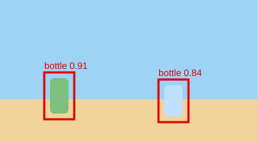

탐지 결과 리포트
작성일:

이번 실험에서 신뢰도 0.5 이상인 결과만 남겼어요. mAP 은 0.74 였어요.
데이터의 품질이 모델의 품질을 결정한다.
실험 설정 자세히 보기
yolo11n, 이미지 크기 640, 에폭 50
작성일:

이번 실험에서 신뢰도 0.5 이상인 결과만 남겼어요. mAP 은 0.74 였어요.
데이터의 품질이 모델의 품질을 결정한다.
yolo11n, 이미지 크기 640, 에폭 50